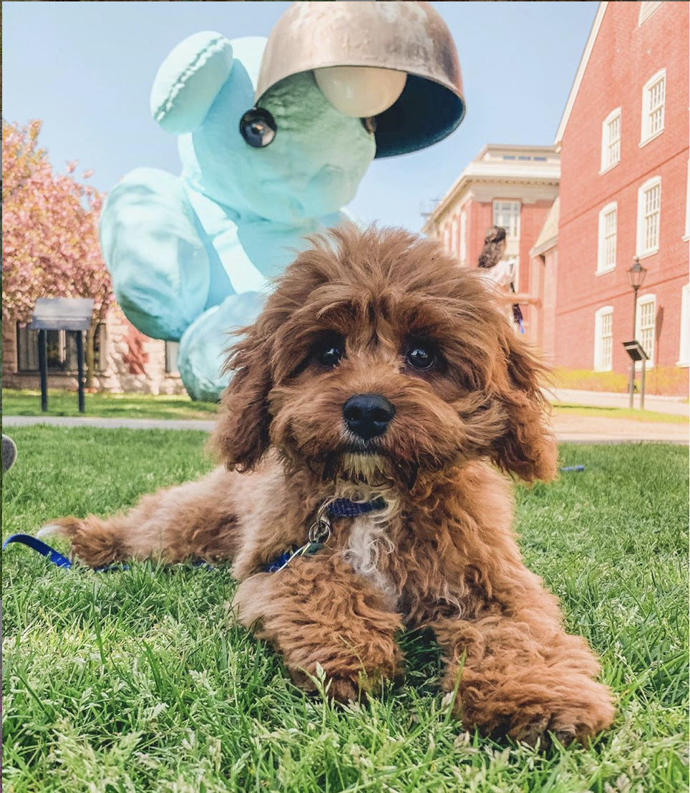

HW2: CIFAR2: Convolutional Neural Networks
Conceptual Questions due Monday, 10/05/20 at 11:59pm AoE
Code due Friday, 10/09/20 at 11:59pm AoE
As Blueno travels through deep space, he decides to make good use of the travel time to finally learn to distinguish the furry, four-legged creatures he often sees walking around. However, Blueno thinks he might need a little help. He's travelling alone, so we won't be there to help him, but we can help him in a different way. We decide to build a model that he can access on his spaceship to hopefully aid him in learning to recognize cats vs. dogs.
In this assignment, you will be building a Convolutional Neural Network (CNN) with pooling layers using the CIFAR dataset to learn to distinguish cats and dogs. Please read this handout in its entirety before beginning the assignment.
Conceptual Questions
From homework 2 onward, we will no longer use Gradescope's online assignment feature for conceptual questions (which was used in hw1); instead we will do pdf submissions to Gradescope. Please submit your pdf with answers to all conceptual questions as one pdf on Gradescope under HW2 Conceptual Questions: CIFAR2: Convolutional Neural Networks. When submitting the pdf to Gradescope, be sure to select in Gradescope which pages match with which questions. LaTex is recommended but not required.
2470 students only: If you are in 2470, all conceptual questions (including non-2470 ones) should be written as one pdf and submitted to the "[CS2470] Hw2 Conceptual Questions: Convolution Neural Networks" assignment. Do not submit also to the CS1470 conceptual assignment.
You can find the conceptual questions as a pdf here, and remember to submit on Gradescope as one single PDF.
Note these questions are due before the coding portion of the assignment.
Getting the Stencil
Please click
here
to get the stencil code. Reference this
guide
for more information about GitHub and GitHub Classroom.
There are two bash scripts in the root directory of the hw
repository, create_venv.sh for creating a
virtual environment and download.sh for
downloading the data (if it exists for that homework). You
need to run download.sh to get the data.
However, if you created a virtual environment for the last
homework or you're working on the department machine
from ssh, you do not need to run
create_venv.sh (you will still need to activate
the virtualenv you created in hw1 by running
source <path to virtual env>/bin/activate, e.g. if your virtualenv created in hw1 is located at
/User/blueno/cs1470/hw1/env, you need to
activate the virtualenv with
source /User/blueno/cs1470/hw1/env/bin/activate.) You can run a bash script with the command
./script_name.sh (ex:
./download.sh).
The stencil should contain these files: assignment.py, convolution.py and preprocess.py.
Setup
Work on this assignment off of the stencil code provided, but do not change the stencil except where specified. Changing the stencil will result in incompatiblity with the autograder and result in a low grade. You shouldn't change any method signatures or add any trainable parameters to init that we don't give you (other instance variables are fine).
This assignment should take longer to run than the previous assignment. If completed correctly, the model should train and test within 15 minutes on a department machine. While you will mainly be using TensorFlow functions, the second part of the assignment requires you to write your own convolution function, which is very computationally expensive. To counter this, we only require that you print the accuracy across the test set after finishing all training. On a department machine, training should take about 3 minutes and testing using your own convolution should take about 2 minutes. While writing your code locally may be easier, we recommend running your code on department machines to avoid straining your personal computer.
This assignment requires the TensorFlow, NumPy, and Matplotlib packages. These should all be installed already in the virtualenv we provide, and you should be good to go as long as you've activated it.
To activate the virtual environment on a department machine, you can run:
source /course/cs1470/tf-2.3/bin/activate
You can also check out the Python virtual environment guide to set up TensorFlow 2.3 on your local machine.
Please note again that if you installed a virtual environment onto your local machine you do not need to use create_venv.sh to install the virtual environment again. The environment you created previously will work for this assignment as well. See previous section (Setup) for how to activate that hw1 environment.
Assignment Overview
Your task is a binary classification rather than multi-class classification problem. We are doing CIFAR2, not CIFAR10. While the CIFAR10 dataset has 10 possible classes (airplane, automobile, bird, cat, deer, frog, horse, ship, and truck), you will build a CNN to take in an image and correctly predict its class to either be a cat or dog, hence CIFAR2. We limit this assignment to a binary classification problem so that you can train the model in a reasonable amount of time.
The assignment has three parts:
- Conceptual Questions: Answer questions related to the assignment and class material on Gradescope. If you are taking 2470, you must also answer the additional questions on Gradescope marked with CS2470.
- Model: Build the model. Our stencil provides a model class with several methods and hyperparameters you need to use for your network.
- Convolution Function Fill out a function that performs the convolution operator. See Roadmap below for more information on parts 2 and 3.
You should include a brief README with your model's accuracy and any known bugs.
Roadmap
You will notice that the structure of the Model class is very similar to the Model class defined in your first assignment. We strongly suggest that you first complete the Intro to TensorFlow Lab before starting this assignment. The lab includes many explanations about the way a Model class is structured, what variables are, and how things work in TensorFlow. If you come into hours with questions about TensorFlow related material that is covered in the lab, we will direct you to the lab.
Below is a brief outline of some things you should do. We expect you to fill in some of the missing gaps (review lecture slides to understand the pipeline) as this is your second assignment.
Step 1. Preprocess the data
-
We have provided you with a function
unpickle(file)in the preprocess file stencil, which unpickles an object and returns a dictionary. Do not edit it. We have also already extracted the inputs and labels from the dictionary inget_dataso you have no need to deal with the pickled file or the dictionary. -
You will want to limit the inputs and labels returned by
get_datato those representing the first and second classes of your choice. For every image and its corresponding label, if the label is not of the first or second class, then remove the image and label from your inputs and labels arrays. You might findnumpy.nonzero[https://numpy.org/doc/1.18/reference/generated/numpy.nonzero.html] useful for finding only the indices of your labels which correspond to the first and second class. -
At this point, your inputs are still two dimensional.
You will want to reshape your inputs into (-1, 3, 32,
32) using
tf.reshape(inputs, (-1, 3, 32 ,32))and then transpose them usingtf.transpose(inputs, perm=[0,2,3,1])so that the final inputs you return have shape (num_examples, 32, 32, 3), where the width is 32, height is 32, and number of channels is 3. -
You now have inputs and labels of only two classes, but
the label numbers do not represent the binary inputs.
You will want to re-number the labels such that the cat label class is 0
and the dog label is 1 (for your own training purposes, it doesn't matter which is which;
however, we require this specificity for our autograder). You might find
numpy.where[https://numpy.org/doc/stable/reference/generated/numpy.where.html] useful in the renumbering process. -
After doing that, you will want to turn your labels into
one hot vectors, where the index with a 1 represents the
class of the correct image. You can do this with the
function
tf.one_hot. - This can be a bit confusing so we'll just make it clear: your labels should be of size (num_images, num_classes). So for example, if your first class is a cat and your second class is sushi, the corresponding label of the first image might be [0, 1] where a 1 in the second index means that it's sushi.
Note: You should normalize the input pixel values so that they range from 0 to 1 to avoid any numerical overflow issues. This can be done by dividing each pixel value by 255.
You're going to be calling get_data on both the training
and testing data files in assignment.py. The
testing and training data files to be read in are in the
following format:
-
train: A pickled object of 50,000 train images and labels. This includes images and labels of all 10 classes. After unpickling the file, the dictionary will have the following elements:- data -- a 50000x3072 numpy array of uint8s. Each row of the array stores a 32x32 color image. The first 1024 entries contain the red channel values, the next 1024 the green, and the final 1024 the blue. The image is stored in row-major order, so that the first 32 entries of the array are the red channel values of the first row of the image.
- labels -- a list of 50000 numbers in the range 0-9. The number at index i indicates the label of the ith image in the array data.
-
test: A pickled object of 10,000 test images and labels. This includes images and labels of all 10 classes. Unpickling the file gives a dictionary with the same key values as above.
Note If you download the dataset from online, the training data is actually divided into batches. We have done the job of repickling all of the batches into one single train file for your ease.
Step 2. Create your model
You will not receive credit if you use the tf.keras, tf.layers, and tf.slim libraries for anything but your optimizer (and Model inheriting from tf.keras.Model is ok too). You may use tf.keras.optimizers.
- Again, you should initialize all hyperparameters within the constructor even though this is not customary. This is still necessary for the autograder. Consider what's being learned in a CNN and intialize those as trainable parameters. In the last assignment, it was our weights and biases. This time around, you will still want weights and biases, but there are other things that are being learned!
-
We recommend using an Adam Optimizer
[
tf.keras.optimizers.Adam] with a learning rate of 1e-3, but feel free to experiment with whatever produces the best results. -
Weight variables should be initialized from a normal
distribution (
tf.random.truncated_normal) with a standard deviation of 0.1. - You may use any permutation and number of convolution, pooling, and feed forward layers, as long as you use at least one convolution layer with strides of [1, 1, 1, 1], one pooling layer, and one fully connected layer.
Note the Dense/Fully Connected Layers are like the linear layers created in the last assignment with a weight and bias.
-
If you are having trouble getting started with model
architecture, we have provided an example below:
-
Convolution Layer 1
[
tf.nn.conv2d]. It is recommended that you also use a bias for your convolutional layers. You can use [tf.nn.bias_add] to add the bias after your convolution operation.-
16 filters of width 5 and height 5
[
tf.Variable(tf.random.truncated_normal([5,5,3,16], stddev=...))] - strides of 2 and 2
- same padding
-
16 filters of width 5 and height 5
[
-
Batch Normalization 1
[
tf.nn.batch_normalization]-
Get the mean and variance using
[
tf.nn.moments]. Pass in [0,1,2] as the axes as we want to do "global normalization". You'll also need to pass in a "variance_epsilon," this is for the purpose of not dividng by 0 if the variance is 0. We recommend you pass in 1e-5 or a smaller number.
-
Get the mean and variance using
[
-
ReLU Nonlinearlity 1
[
tf.nn.relu] -
Max Pooling 1
[
tf.nn.max_pool]- kernels of width 3 and height 3
- strides of 2 and 2
-
Convolution Layer 2
- 20 filters of width 5 and height 5
- strides up to you
- same padding
- Batch Normalization 2
- ReLU Nonlinearlity 2
-
Max Pooling 2
- kernels of width 2 and height 2
- strides up to you
-
Convolution Layer 3
- 20 filters of width 3 and height 3
- strides must be 1 and 1
- same padding
- Batch Normalization 3
- ReLU Nonlinearlity 3
-
Dense Layer 1
-
Dropout with rate 0.3
[
tf.nn.dropout]
-
Dropout with rate 0.3
[
-
Dense Layer 2
- Dropout with rate 0.3
- Dense Layer 3
-
Fill out the call function using the trainable
variables you've created. Your call function
should return the logits. Note that in the lab,
we mentioned using a @tf.function decorator to
tell TF to run it in graph execution. Do NOT do
this for this assignment - we'll explain why
the forward pass has to be run in eager
execution later. The parameter
is_testingwill be used later, do not worry about it when implementing everything in this part.
-
Convolution Layer 1
[
-
Calculate the average softmax cross-entropy loss on the
logits compared to the labels. We suggest using
tf.nn.softmax_cross_entropy_with_logits.
Step 3. Train and test
-
In the main function, you will want to get your train
and test data, initialize your model, and train it for
many epochs. We suggest training for 10 epochs. For the
autograder, we will train it for at most 25 epochs (hard
limit of 15 minutes). We have provided for you a train
and test method to fill out. The train method will take
in the model and do the forward and backward pass for
a SINGLE epoch. Yes, this means that,
unlike the first assignment, your
mainfunction will have a for loop that goes through the number of epochs, calling train each time. -
Even though this is technically part of preprocessing,
you should shuffle your inputs and labels when TRAINING.
Keep in mind that they have to be shuffled in the same
order. We suggest creating a range of indices of length
num_examples, then using
tf.random.shuffle. Finally you can usetf.gather(train_inputs, indices)to shuffle your inputs. You can do the same with your labels to ensure they are shuffled the same way. -
Make sure you've reshaped inputs in
preprocessing into shape (batch_size, width, height,
in_channels) before calling model.call().
When training, you might find it helpful to actually
call
tf.image.random_flip_left_righton your batch of image inputs to increase accuracy. Do not call this when testing. -
Call the model's forward pass and calculate the loss
within the scope of
tf.GradientTape. Then use the model's optimizer to apply the gradients to your model's trainable variables outside of the GradientTape. If you're unsure about this part, please refer to the lab. This is synonymous with doing thegradient_descentfunction in the first assignment, except that TensorFlow handles all of that for you! - If you'd like, you can calculate the train accuracy to check that your model does not overfit the training set. If you get upwards of 80% accuracy on the training set but only 65% accuracy on the testing set, you might be overfitting.
- The test method will take in the same model, now with trained parameters, and return the accuracy given the test data and test labels.
Step 4. Creating your own conv2d
Before starting this part of the assignment, you should ensure that you have an accuracy of at least 70% on the test set using only TensorFlow functions for the problem of classifying dogs and cats.
As a new addition to this assignment, you will be implementing your very own convolution function! print(Deep Learning == TensorFlow tutorial) ----> False!
For the sake of simple math calculations (less is more,
no?), we'll require that our
conv2d function
only works with a stride of 1 (for both
width and height). This is because the calculation for
padding size changes as a result of the stride, which would
be way more complex and unreasonable for a second
assignment.
Do NOT change the parameters of the conv2d
function we have provided. Even though the
conv2d function takes in a strides argument,
you should ALWAYS pass in [1, 1, 1, 1].
Leaving in strides as an argument was a conscious design
choice - if you wanted to eventually make the conv2d
function work for other kinds of strides in your own time,
this would allow you to easily change it.
-
Your inputs will have 4 dimensions. If we are to use
this
conv2dfunction for the first layer, the inputs would be [batch_size, in_height, in_width, input_channels]. - You should ensure that the input's number of "in channels" is equivalent to the filters' number of "in channels". Make sure to add an assert statement or throw an error if the number of input in channels are not the same as the filters in channels. You will lose points if you do not do this.
-
When calculating how much padding to use for SAME
padding, padding is just
(filter_size - 1)/2if you are using strides of 1. The calculation of padding differs if you increase your strides and is much more complex, so we won’t be dealing with that. If you are interested, you may read about it here. If padding is not an integer, you can just round down usingmath.floor. -
You can use this hefty NumPy function
np.padto pad your input! - After padding (if needed), you will want to go through the entire batch of images and perform the convolution operator on each image. There are two ways of going about this - you can continuously append to multi dimensional NumPy arrays to an output array or you can create a NumPy array with the correct output dimensions, and just update each element in the output as you perform the convolution operator. We suggest doing the latter - it's conceptually easier to keep track of things this way.
-
Your output dimension height is equal to
(in_height + 2*padY - filter_height) / strideY + 1and your output dimension width is equal to(in_width + 2*padX - filter_width) / strideX + 1. Again,strideXandstrideYwill always be 1 for this assignment. Refer to the CNN slides if you'd like to understand this derivation. - You will want to iterate the entire height and width including padding, stopping when you cannot fit a filter over the rest of the padding input. For convolution with many input channels, you will want to perform the convolution per input channel and sum those dot products together.
Step 5. Testing your own conv2d
-
We have provided for you a few tests that compare the
result of your very own
conv2dand TensorFlow'sconv2d. If you've implemented it correctly, the results should be very similar. -
The last super important part of this project is
that you should call your
conv2dfunction IN your model. TensorFlow cannot build a graph/differentiate with NumPy operators so you should not add a @tf.function decorator. -
In your model, you should set
is_testingto True when testing, then make sure that ifis_testingis True, you use your own convolution rather than TensorFlow'sconv2don a SINGLE convolution layer. If you follow the architecture described above, we suggest adding in an if statement before the third convolution layer (ie. switch out theconv2dfor your third convolution). This part will take the longest, and is why we say it might actually take up to 15 minutes on a local machine.
Mandatory and Non-mandatory Hyperparameters: You can train with any batch size but you are limited to training for at most 25 epochs. However, your model must train using TensorFlow functions and test using your own convolution function without timing out on Gradescope. Again, the parameters we suggest are training for 25 epochs using a batch size of 64.
Hint If you are having difficulty running within the time frame, consider using matrix multiplication or tensordot to replace one (or more) of your inner for loops.
Visualizing Results
We have written two methods for you to visualize your results. The created visuals will not be graded and are entirely for your benefit. You can use it to check out your doggos and kittens.
-
We've provided the
visualize_results(image_inputs, logits, image_labels, first_label, second_label)method for you to visualize your predictions against the true labels using matplotlib, a useful Python library for plotting graphs. This method is currently written with the image_labels having a shape of (num_images, num_classes). DO NOT EDIT THIS FUNCTION. You should call this function after training and testing, passing into intovisualize_resultsan input of 50 images, 50 probabilities, 50 labels, the first label name, and second label name. -
Unlike the first assignment, you will need to pass in
the strings of the first and second classes. A
visualize_resultsmethod call might look like:visualize_results(image_inputs, logits, image_labels, "cat", "dog"). - This should result in two visuals, one for correct predictions, and one for incorrect predictions. You should do this after you are sure you have met the benchmark for test accuracy.
-
We have also provided the
visualize_loss(losses)method for you to visualize your loss per batch over time. Your model or your training function should have a listloss_listto which you can append batch losses to during training. You should call this function after training and testing, passing inloss_list.
CS2470 Students
There are two extra requirements for CS2470 students.
-
Please complete the CS2470-only conceptual questions in addition to the coding assignment and the CS1470 conceptual questions. Note: Questions about 2470 will only be answered on Piazza, or by TAs marked with an asterisk (*) on the calendar.
- You must receive an accuracy of at least 75% within 25 epochs of training your model. This means that you must choose an architecture/play around with hyperparameters to reach a higher accuracy.
Hint Consider implementing cutout (as discussed in this paper from the conceptual questions) and/or playing around with the dropout rate.
Autograder
Your model must complete training within 15 minutes AND under 25 epochs on Gradescope.
Our autograder will import your model and your preprocessing
functions. We will feed the result of your
get_data function called on a path to our data
and pass the result to your train method in order to return
a fully trained model. After this, we will feed in your
trained model, alongside the TA pre-processed data, to our
custom test function. This will just batch the testing data
using YOUR batch size and run it through your model's
call function.
However, we will test that your model can test with any
batch size, meaning that you should not hardcode
self.batch_size in your
call function.
The logits which are returned will then be
fed through an accuracy function. Additionally, we will test
your conv2d function. In order to ensure you don't lose
points, you need to make sure that you... A) correctly
return training inputs and labels from
get_data, B ) ensure that your model's
call function returns logits from the inputs
specified, and that it does not break on different batch
sizes when testing, and C) it does not rely on any packages
outside of tensorflow, numpy, matplotlib, or the python
standard library.
Grading
Code: You will be primarily graded on functionality. Your model should run within 15 minutes and 25 epochs on Gradescope and have an accuracy that is at least greater than 70% on the testing data (or 75% for CS2470 students).
Conceptual: You will be primarily graded on correctness (when applicable), thoughtfulness, and clarity.
You will not receive credit if you use the tf.keras, tf.layers, and tf.slim libraries for anything but your optimizer.
Handing In
You should submit the assignment via Gradescope under the
corresponding project assignment. You should upload a zipped
file from your local computer by zipping up your
hw2 folder
IMPORTANT!
-
Please make sure your
assignment.py,preprocess.py, andconvolution.pyare in “hw2/code” this is very important for our autograder to work! - DELETE the data folder before you zip up your code, it might be too big to upload to Gradescope
IF YOU ARE IN 2470: PLEASE REMEMBER TO ADD A BLANK FILE CALLED “2470student” IN THE hw2/code DIRECTORY, WE ARE USING THIS AS A FLAG TO GRADE 2470 SPECIFIC REQUIREMENTS, FAILURE TO DO SO MEANS LOSING POINTS ON THIS ASSIGNMENT
Cats vs. Dogs?
"I am currently neither, and I have been both in the past" - Daniel Ritchie
"Definitely dogs." - Kevin Du
"Introvertly a cat, extrovertly a dog" - Koyena Pal
"I love doge and can I has cheesburger" - Bryce Blinn
"I love my dog! I think cats are secretly plotting the destruction of the human race" - George Lee
Blueno loves all of his furry friends. Here is one of his favorite pics of him and his pal Brady, who he now realizes is a dog.
